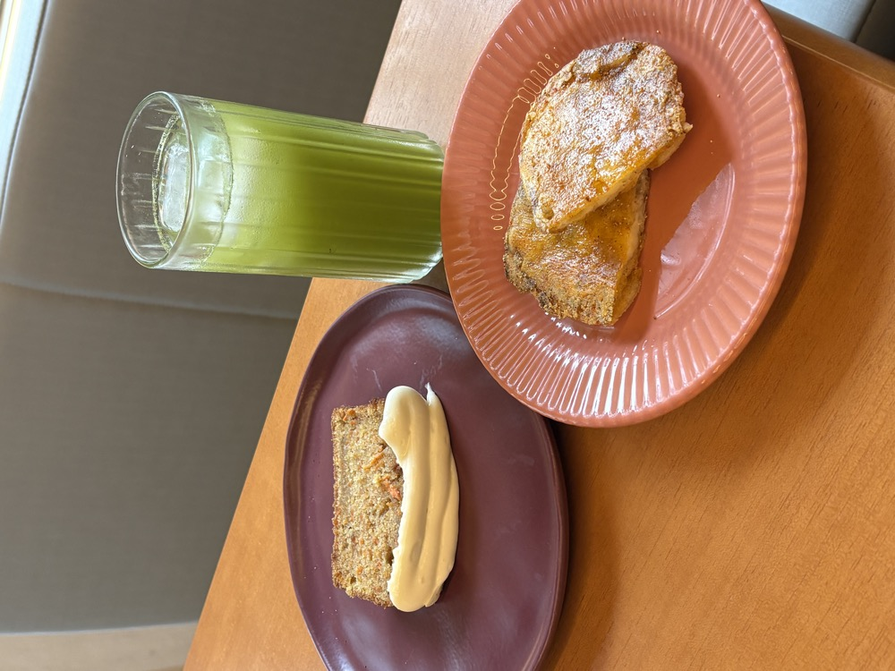
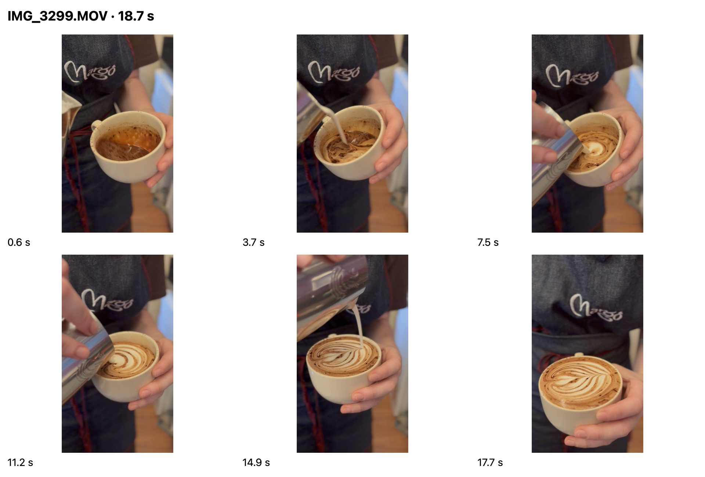
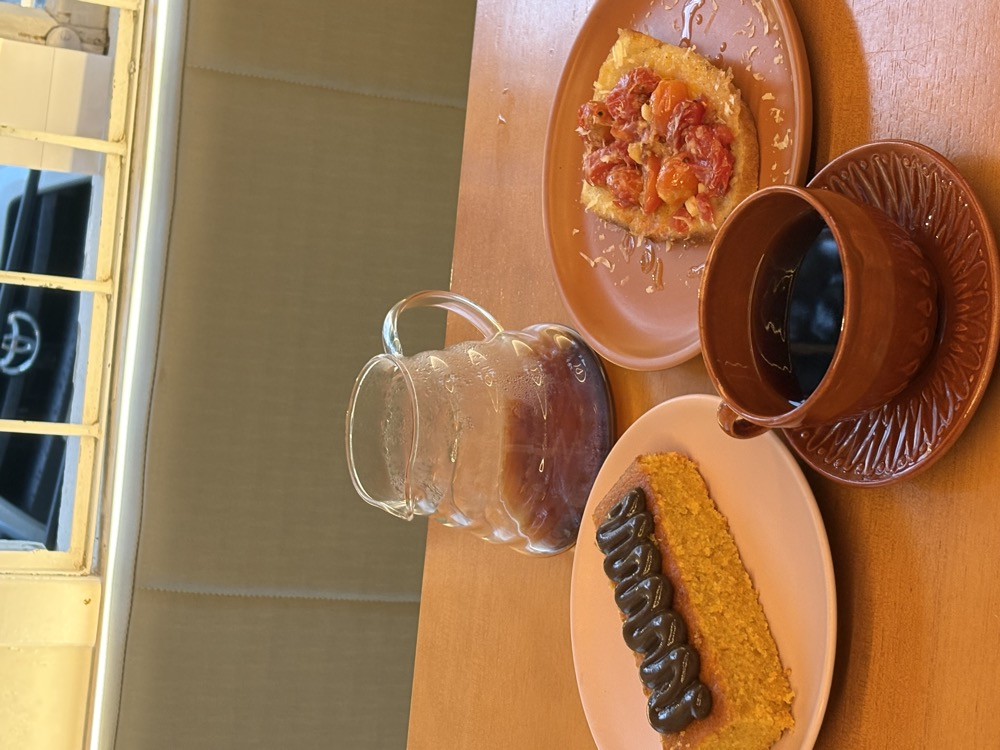
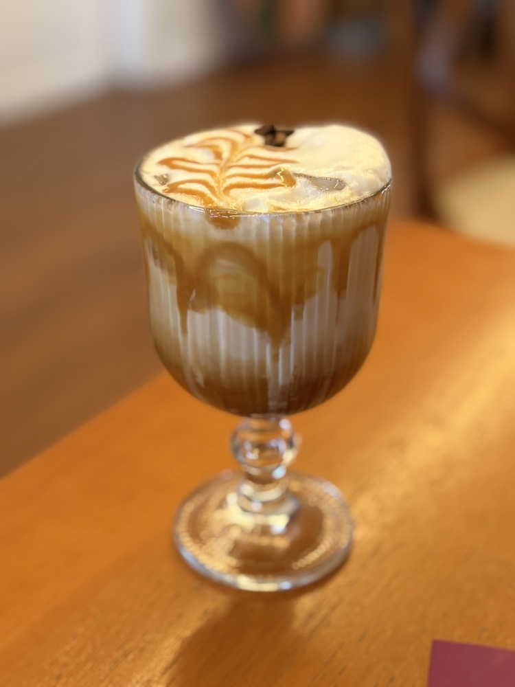
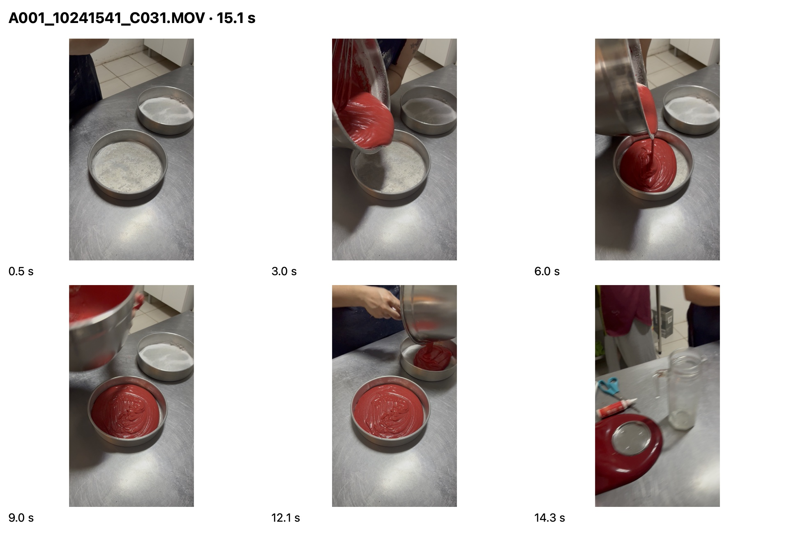
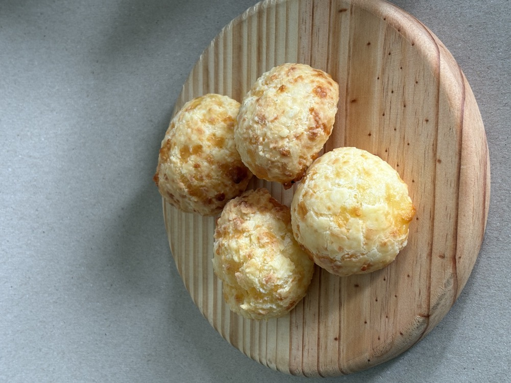

Arquivos indicados para começar; clique na folha de contato para comparar as variações. “Base para produzir” ainda exige revisão de áudio, nomes ou montagem.
Base para produzir · 12 fotos + 1 vídeoFavoritos da Bruna

Usar para: Carrossel dos pedidos e Reel com a apresentação.
Começar por: IMG_3163 ou 3167 para composição; 3168/3169 bebida; 3170/3171 e 3172 para detalhes.
IMG_3161–3172.HEIC; IMG_3160.MOV (31,6 s).
Pendente: Ouvir a fala para validar escolhas, motivos e nomes. Não há retrato posado nas fotos desta pasta; capa pode usar os pedidos ou um frame aproveitável do vídeo.
Abrir pasta no Drive · Ver folha de contatoPode ir para arte · 11 fotosCroque Meu Senhor
Usar para: Estático de 07/11 e detalhes para outros conteúdos.
Começar por: IMG_3307: prato e fachada; 3308/3309: recheio e gratinado; 3311: vista de cima.
IMG_3301–3311.HEIC.
Pendente: Selecionar, tratar e escrever. Usar novas imagens desta pasta para não depender só do acervo antigo.
Abrir pasta no Drive · Ver folha de contatoPode ir para edição · 7 vídeos · 160,3 sPreparo do mocha

Usar para: Reel de 12/11: preparo → finalização → bebida pronta.
Começar por: 3294 base na xícara; 3295 moagem; 3296 extração; 3297 mistura; 3298 vaporização; 3299 desenho; 3300 finalização.
IMG_3294–3300.MOV.
Pendente: Cortar esperas, escolher abertura e conferir áudio/cor na edição. Os quadros mostram a sequência completa; não é uma revisão integral de som.
Abrir pasta no Drive · Ver folha de contatoBase para produzir · 11 fotos + 2 vídeosFavoritos da Suelen

Usar para: Carrossel de 17/11 e base para o Reel de dezembro.
Começar por: 3181: conjunto; 3173: bolo amarelo com cobertura; 3177/3178: salgado com tomates; 3183/3184: café.
IMG_3173–3178 e 3180–3184.HEIC; IMG_3158/3159.MOV.
Pendente: Ouvir 3158 (17,2 s). 3159 (8,4 s) mostra pessoa diferente de 3158 e enquadramento parecido com o vídeo da Bruna: confirmar a identificação, sem mover arquivos. Nomes dos pedidos dependem da fala/cardápio.
Abrir pasta no Drive · Ver folha de contatoPode ir para arte · 9 fotosMesa para grupos
Usar para: Carrossel de 28/11, na linha da mesa alta.
Começar por: 3313: mesa vazia e mural; 3315/3316: grupo e ambiente; 3318/3320: aproximação.
IMG_3313–3321.HEIC.
Pendente: Escolher composição. São variações da mesma cena, não nove momentos diferentes. Não precisa fotografar a mesa novamente.
Abrir pasta no Drive · Ver folha de contatoPode virar carrossel · 12 fotosChoux por dentro
Usar para: Choux aberta: recheios visíveis em fotos. Alternativa de comida sem gravar.
Começar por: 3284: recheio rosa; 3288/3289: recheio claro; 3291/3293: outro detalhe do interior.
IMG_3282–3293.HEIC.
Pendente: Confirmar sabores. Há fotos do interior, mas nenhum vídeo de corte nesta pasta. Um Reel da faca cortando ainda exige gravação.
Abrir pasta no Drive · Ver folha de contatoPode ir para arte · 7 fotosCaramelo salgado

Usar para: Foto única de bebida ou carrossel de detalhes, como reserva para o feed.
Começar por: 3324/3326: bebida inteira; 3327/3328: detalhe da cobertura.
IMG_3322–3328.HEIC.
Pendente: Confirmar nome completo no cardápio. A pasta mostra bebida pronta; não contém vídeo de preparo.
Abrir pasta no Drive · Ver folha de contatoReel de bastidor possível · 7 vídeos · 156,4 sMassa do red velvet

Usar para: Bastidor curto da massa. Pode ocupar uma pauta de cozinha se ajustarmos o conceito.
Começar por: C025: batedeira; C027/C028/C030: mistura; C031: massa nas formas.
A001_10241532_C025 até A001_10241541_C031.MOV.
Pendente: Os quadros mostram a massa, não bolo assado/recheado, corte ou serviço. Pode editar só esta etapa; para “da cozinha à mesa” completo, falta finalizar com bolo pronto. Os vídeos são verticais em 4K.
Abrir pasta no Drive · Ver folha de contatoReservas aproveitáveis · 31 fotosProdutos avulsos e mural

Usar para: Mais comida no feed sem depender da agenda de gravação.
Começar por: 3121: bolo escuro com cobertura; 3126: bolo amarelo com chocolate; 3133: pães redondos; 3137: pães trançados; 3142: gato do mural.
IMG_3111–3138 (sem 3139/3140) e IMG_3141–3143.HEIC.
Pendente: Confirmar nomes e composição. 3127/3128 mostram sobremesa em recipiente. Não nomear produtos por aparência; evitar fotos com fita azul/apoios da sessão.
Abrir pasta no Drive · Ver folha de contato Bolos, sobremesa em recipiente, pães redondos/trançados e detalhes do mural. Os nomes precisam ser confirmados antes de entrar na copy.
Listagem integral da raiz e oito subpastas. Fotos conferidas em folhas de contato; seis quadros distribuídos em cada um dos 17 vídeos, com metadados de duração e resolução. Áudio não ouvido/transcrito e vídeos não reproduzidos integralmente; a triagem não certifica áudio, foco contínuo ou edição pronta. Não foi conferido o Instagram nem o acervo 17-10 nesta rodada. Data de postagem não alterada por este inventário.